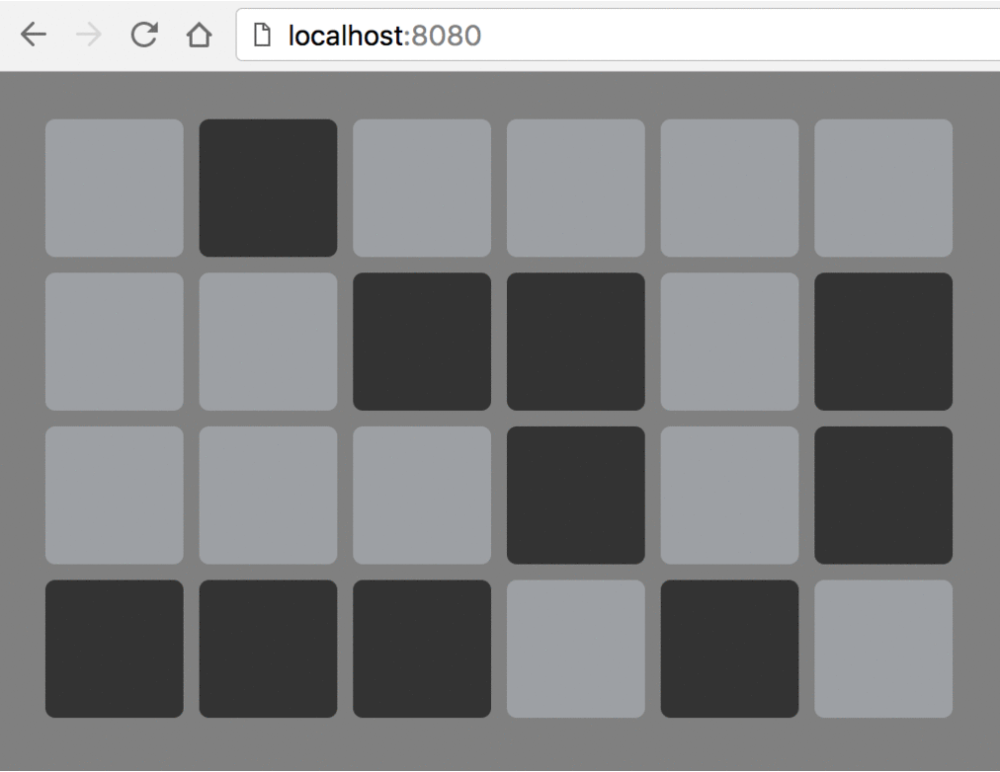

數字時鐘是不是很膩了？第一次看到 Binary Clock 是不是有一種好想擁有的感覺？
現在，我們就來瞭解 & 用 vue.js 動手做做看吧！
什麼是 Binary ? 什麼又是 Binary Clock ? 來說說吧：
Binary 中文是二進位。平常我們看數字 5 其實是十進位，轉成二進位要看成 0101
假設現在是 19:56:16，轉成二進位是 0001 1001 : 0101 0110 : 0001 0110
那麼 Binary Clock 會對應二進位 1 燈亮、 0 燈不亮。
Pre requirements
開始之前，我們有些前置作業要完成，要把環境架起來
Required:
- Node.js (>=4.x, 6.x preferred)
- npm version 3+
- Git.
Installation:
安裝 vue-cli 可參考
1
| $ npm install -g vue-cli
|
建立專案
1 2 3 4 5 6 7 8 9 10 11 12 13 14 15 16 17 18 19 20 21 22
| $ vue init webpack <project-name> ? Project name <project-name> ? Project description <description> ? Author <auther> ? Vue build standalone ? Install vue-router? No ? Use ESLint to lint your code? No ? Setup unit tests with Karma + Mocha? No ? Setup e2e tests with Nightwatch? No vue-cli · Generated "<project-name>". To get started: // 進入專案 cd <project-name> // 初始專案 npm install // 啟動專案 npm run dev Documentation can be found at https://vuejs-templates.github.io/webpack
|
前往 http://localhost:8080 看到大大的 V 就表示成功了
Implement
首先，建立 /src/components/Light.vue。我們需要一顆燈的元件，它的行為只有亮或暗，而且我們要從外部給予亮或暗的指令。
1 2 3
| <template> <div class="light" :class="{ on: on }"></div> </template>
|
- 透過 props 屬性從父元件傳入 0/1 布林值進來
1 2 3 4 5 6 7 8 9 10
| <script> export default { props: { on: { type: Boolean, required: true } } } </script>
|
1 2 3 4 5 6 7 8 9 10 11 12 13 14
| <style scoped> .light { background-color: #9da0a4; width: 70px; height: 70px; margin-top: 8px; margin-bottom: 8px; margin-left: 8px; border-radius: 5px; } .light.on { background-color: #333; } </style>
|
接著，建立 /src/components/Digit.vue。我們以四顆燈為一組，需要兩組形成兩位數的元件
- 拉出兩位數的元件，每位數是由是四個 Light 元件組成，四顆燈分別表示二進位的四個 bit
1 2 3 4 5 6 7 8 9 10 11 12 13 14 15 16
| <template> <div class="binary-digit"> <div class="digit"> <light :on="!!(tens & 8)"></light> <light :on="!!(tens & 4)"></light> <light :on="!!(tens & 2)"></light> <light :on="!!(tens & 1)"></light> </div> <div class="digit"> <light :on="!!(ones & 8)"></light> <light :on="!!(ones & 4)"></light> <light :on="!!(ones & 2)"></light> <light :on="!!(ones & 1)"></light> </div> </div> </template>
|
- 同樣透過 props 屬性從父元件傳入兩位數進來，並且切成十位數字和個位數字，每位數字轉成二進位交給 Light 元件顯示
1 2 3 4 5 6 7 8 9 10 11 12 13 14 15 16 17 18 19 20 21 22 23
| <script> import Light from './Light' export default { props: { digit: { type: Number, required: true } }, components: { Light }, computed: { tens () { return Math.floor(this.digit / 10) }, ones () { return this.digit % 10 } } } </script>
|
1 2 3 4 5 6
| <style scoped> .binary-digit { display: flex; flex-direction: row; } </style>
|
最後，修改 /src/App.vue 。我們要把時/分/秒的元件組成時鐘，並且每秒更動一次，完成 Binary Clock
- 拉出時/分/秒的元件，是由三個 Digit 元件組成
1 2 3 4 5 6 7 8 9
| <template> <div id="app"> <div class="binary-clock"> <digit :digit="hours"></digit> <digit :digit="minutes"></digit> <digit :digit="seconds"></digit> </div> </div> </template>
|
- 利用 window.setInterval 每秒讀取一次時間，更新 hours（時）, minutes（分）, seconds（秒） 的值，交給 Digit 元件處理
1 2 3 4 5 6 7 8 9 10 11 12 13 14 15 16 17 18 19 20 21 22 23 24 25 26
| <script> import Digit from './components/Digit' export default { name: 'app', components: { Digit }, data () { return { hours: 0, minutes: 0, seconds: 0, now: new Date() } }, mounted () { window.setInterval(() => { var now = new Date() this.hours = now.getHours() this.minutes = now.getMinutes() this.seconds = now.getSeconds() }, 1000) } } </script>
|
1 2 3 4 5 6 7 8 9 10 11 12
| <style scoped> body { background-color: gray; } #app { margin: 1em; } .binary-clock { display: flex; flex-direction: row; } </style>
|
Demo
結果會像這樣

作者時間
想看完整原始碼 在這裡在這裡 toryn26383/binary-clock
因為習慣使用 pug & sass 所以原始碼跟這裡的程式碼會有不一樣喔，這裡是為了簡化學習複雜度，使用 html & css 教學
最後，歡迎大家按右下方的社群按鈕，貼上你的成果，把這一次的收穫分享出去喔（微笑）